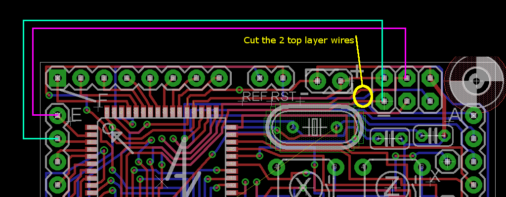

Rapide64a
A quick board for using the
atmega64a a cheap and full of pins atmega series micro controller. The board has such a shape to be plugged on a recently acquired 8x8 RGB led matrix.
Eagle files :
https://code.google.com/p/alanarduinotools/source/browse/#svn%2Ftrunk%2Feagle%2FRapide64a
Projects using it
README how to fix the bug on board v1.0
There's an error on the v1.0 version : the SPI programming pins are NOT the labelled MISO/MOSI ones (see atmega64a). To use that version, cut the 2 traces on the top side of the board (the red lines circled in yellow) and put 2 blue wires from PE0 and PE1 to the SPI programmer.
